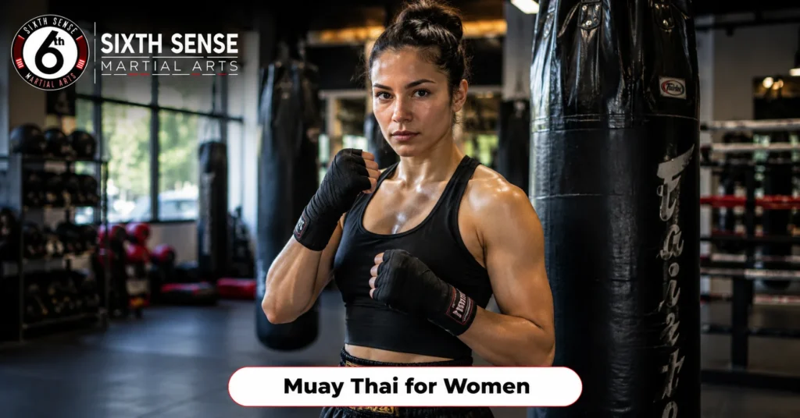
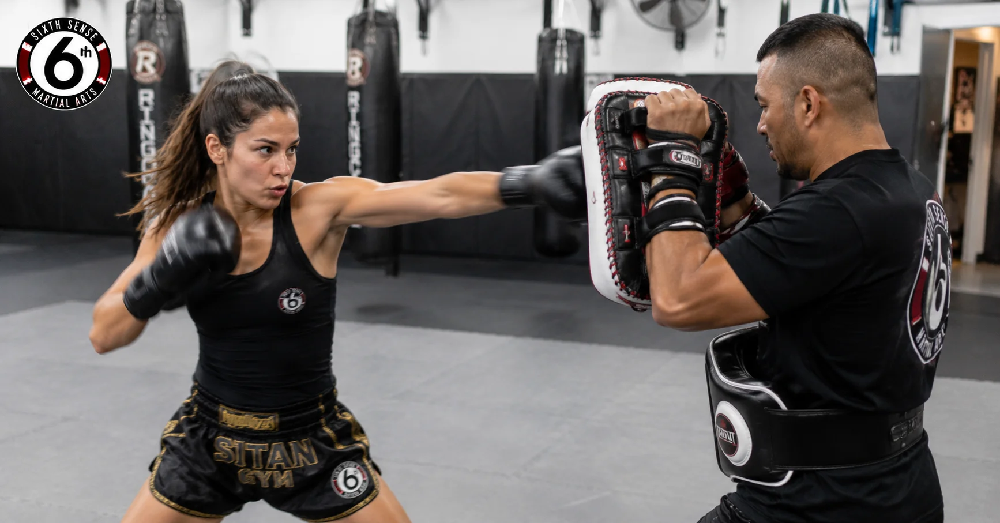
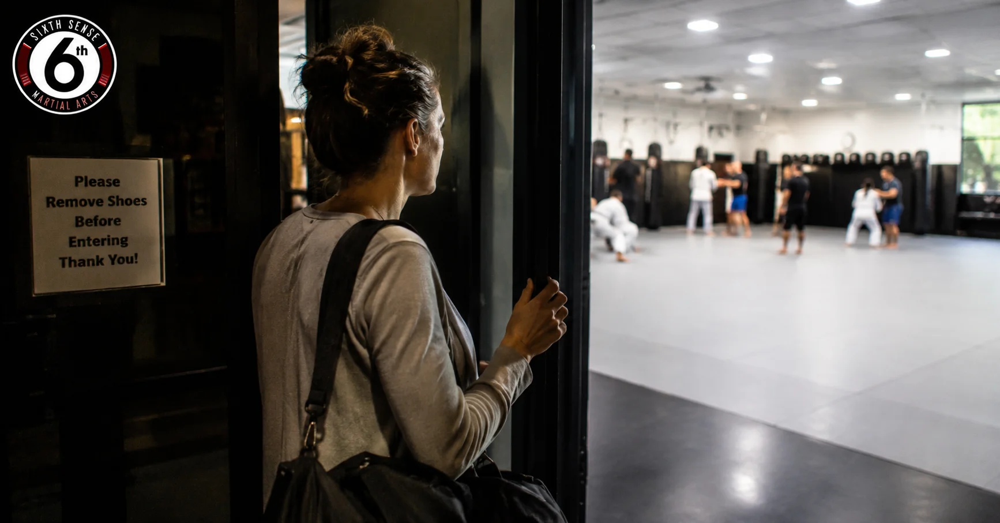

Muay Thai for Women Building Strength Confidence and Self Defense

The Rise of Muay Thai for Women in Fitness Culture
Walk into almost any Muay Thai gym today and you will notice something that would have been rare just a decade ago. Women are no longer the minority on the mat they are a driving force behind the sport’s growing popularity. Muay Thai for women has shifted from a niche interest to one of the most requested classes at gyms across the country including here at Sixth Sense Martial Arts in Coppell TX. Women are showing up not just to get fit but to reclaim a sense of power that many activities never gave them. So if you have been curious about stepping into this world this guide will walk you through exactly what Muay Thai offers women and why so many are never looking back once they start.
Why Muay Thai for Women Builds a Different Kind of Strength
Traditional workouts often focus on how your body looks. Muay Thai for women flips that entire mindset upside down. Instead of chasing a certain body type training becomes about what your body can actually do. As a result women who train regularly develop functional strength that translates directly into real life capability. Moreover every kick punch elbow and knee strike engages multiple muscle groups at once which builds a lean powerful physique naturally. In fact many women report noticing stronger arms more defined legs and improved core stability within just a few weeks. Because of this the strength gained through Muay Thai feels earned and useful rather than purely cosmetic. That shift in mindset alone keeps women coming back long after the initial soreness fades.
The Confidence Shift Women Experience Through Muay Thai
Confidence is not something you can fake and Muay Thai for women builds it in the most authentic way possible through actual competence. Every technique you master every combination you land solidifies a quiet belief in your own capability. As a result women who train consistently report standing taller speaking up more often and carrying themselves differently in everyday situations. Furthermore this newfound confidence often extends into careers relationships and personal decision making far beyond the gym walls. One woman who trains at Sixth Sense shared that Muay Thai helped her set boundaries at work she never would have set before. Consequently this transformation is not about becoming aggressive it is about knowing your own strength and no longer questioning it.
Muay Thai for Women as Practical Self Defense
Personal safety remains a real concern for women everywhere and Muay Thai for women offers something most self defense courses cannot which is practical repetition under realistic conditions. You are not just learning a move once in a weekend seminar you are drilling strikes distance control and body awareness week after week until it becomes instinct. Moreover research consistently shows that practical striking techniques including punches kicks elbows and knees prove effective for real world self defense situations. In addition training with resisting partners teaches you how to read body language and react under pressure which static self defense classes rarely replicate. This is why so many women describe Muay Thai as the self defense training that actually sticks rather than something they forget the moment class ends.

How Muay Thai for Women Supports Mental Wellbeing
Physical strength is only part of the story. Muay Thai for women also delivers powerful benefits for mental and emotional health. When you hit pads or a heavy bag your body releases endorphins which naturally reduce stress and improve your mood. As a result many women use their training sessions as a release valve for the pressures of work family and daily life. Furthermore the intense focus required during drills forces your mind to let go of racing thoughts and stay fully present. Similarly research shows that contact sports like Muay Thai can boost self esteem and improve overall mood which makes it an effective tool against anxiety and low mood. Many women at Sixth Sense describe their training sessions as the one hour of the week where their mind finally goes quiet.
Why Muay Thai for Women Is a Complete Full Body Workout
If you have ever felt bored doing the same treadmill routine Muay Thai for women offers a refreshing alternative that never feels repetitive. Every class combines cardio strength training and flexibility work into one dynamic session. As a result you are burning calories building lean muscle and improving your range of motion all at the same time. Moreover the variety of drills including pad work bag work and technical sparring means your body is constantly challenged in new ways which prevents workout plateaus. In addition the cardiovascular demands of Muay Thai improve heart health and stamina significantly over time. Because of this many women who switch from traditional gym routines to Muay Thai say they finally look forward to working out instead of dreading it.
Breaking the Myth That Muay Thai Is Only for Men
For a long time Muay Thai carried a reputation as a male dominated combat sport. However that stereotype is quickly becoming outdated. Muay Thai for women has proven that technique and skill matter far more than raw size or strength. Moreover the sport is inherently non gendered because effective striking works the same way regardless of body type or gender. As a result women of every shape size and background are finding real success and confidence in the sport. Furthermore many gyms including Sixth Sense actively welcome women into every class alongside men creating an inclusive environment rather than a separate lesser version of training. Consequently the old narrative that this sport belongs only to men simply does not hold up anymore.
The Supportive Community Women Find in Muay Thai
One of the most underrated aspects of Muay Thai for women is the community that forms around it. Training alongside other women who are pushing through the same challenges creates bonds that are difficult to find elsewhere. As a result many women describe their training partners as some of their closest friendships. Moreover this community becomes a support system that extends beyond the gym offering encouragement during tough weeks and celebration during personal milestones. In addition experienced female members often mentor newer students which creates a welcoming cycle of support rather than intimidation. This sense of belonging is frequently cited as one of the biggest reasons women stick with training long term compared to solo workout routines that offer no social connection at all.
What a Beginner Muay Thai Class Looks Like for Women
If you have never trained before it helps to know exactly what to expect. A typical Muay Thai for women class at Sixth Sense starts with a dynamic warm up to get your body moving and your heart rate elevated. Subsequently the coach introduces the technique of the day and breaks it down into manageable steps. You then practice on pads with a partner while receiving personal feedback along the way. After that the class often moves into combination drills that build on what you just learned. Finally the session wraps up with a cool down and stretching. The entire class runs about an hour and the pace is challenging yet completely manageable for beginners. No prior experience or special equipment is required for your first session.
How Muay Thai for Women Fits Into a Busy Schedule
Between work family responsibilities and everything else life throws at you finding time to train can feel impossible. Fortunately Muay Thai for women is designed to fit into even the busiest schedules. At Sixth Sense classes run throughout the day including mornings evenings and weekends so there is always an option that works. Moreover many women find that even two to three sessions per week is enough to experience meaningful physical and mental benefits. Furthermore the gym also serves women from surrounding areas including Valley Ranch Irving Carrollton Grapevine and Lewisville. So no matter how packed your calendar looks there is a realistic way to make this part of your routine. Prioritizing yourself for one hour a few times a week can genuinely change everything else in your life.
Overcoming the Fear of Starting Muay Thai as a Woman
It is completely normal to feel nervous about walking into your first class especially if you have never done anything like this before. Many women worry they are not fit enough coordinated enough or tough enough to belong in a Muay Thai gym. However Muay Thai for women is built specifically to meet you exactly where you are. At Sixth Sense the coaches understand that everyone starts as a beginner and they create an environment focused on encouragement rather than judgment. Moreover most women who show up nervous for their first class leave feeling proud they took the leap. In addition the free trial class removes all pressure to commit which makes that first step far less intimidating. The only requirement to start is a willingness to try.

Real Transformations Through Muay Thai for Women
The physical changes women experience through training are impressive but the deeper transformation often happens on the inside. Many women who start Muay Thai for women are looking for a workout and end up finding something much bigger. They discover resilience they did not know they had and a version of themselves that feels genuinely powerful. As a result training becomes less about fitness goals and more about who they are becoming through the process. Furthermore this transformation often influences how women show up in other challenging areas of their life whether that is a difficult conversation a demanding career or a personal setback. The strength built in the gym has a way of showing up exactly when you need it most outside the gym as well.
Getting Started With Muay Thai for Women at Sixth Sense
If everything you have read here resonates with you the next step is simple. Sixth Sense Martial Arts at 817 S MacArthur Blvd in Coppell TX offers a completely free trial class so you can experience Muay Thai for women firsthand with zero pressure to commit. Head coach Matheus brings over 15 years of experience and creates a welcoming atmosphere for women of every fitness level and background. Moreover you do not need any prior experience or special gear to attend your first session. The facility is clean modern and designed to make every woman feel comfortable from the moment she walks in. There has never been a better time to discover what your body and mind are truly capable of.
Conclusion
Muay Thai for women is far more than a fitness trend it is a complete transformation that touches every part of your life. From building functional strength and practical self defense skills to boosting confidence and mental wellbeing every class offers something meaningful. At Sixth Sense Martial Arts in Coppell TX women of all backgrounds and fitness levels are discovering a version of themselves they never knew existed. Whether you are looking for a new workout a way to relieve stress or the confidence to protect yourself Muay Thai delivers on every front. Take the first step and book your free trial class today. Your strongest self is waiting on the mat.
Contact Us
Have questions about our classes or training programs. We would love to hear from you. Reach out to us today and let us help you start your martial arts journey the right way.
Follow Us on Social Media
Stay connected with the Sixth Sense Martial Arts community. Follow us for training tips belt grading updates student highlights and exclusive offers.
FAQ’s
Not at all. Every class is designed to accommodate complete beginners. The coaches break every technique into simple steps and adjust the pace so you build skill and confidence gradually without feeling overwhelmed.
No prior strength or athletic background is needed. Muay Thai actually builds that strength for you over time. Women of every fitness level walk in as beginners and develop real physical capability through consistent training.
Yes the techniques taught including strikes distance control and body awareness are practical and repeatedly drilled until they become instinctive. This kind of muscle memory is far more useful than a one time self defense seminar.?
Muay Thai welcomes women of all ages. Many women start in their thirties forties and beyond and find just as much benefit as younger practitioners. The training simply adjusts to your pace and fitness level.
Women train alongside men in the same classes at Sixth Sense which creates a genuinely inclusive environment. Many women say training in a mixed setting actually builds more confidence than a women only space would.
Yes Sixth Sense offers a completely free no obligation trial class. You can experience a full session firsthand and decide if it feels right for you with absolutely no pressure to sign up.
Train with us in Coppell
The first class is free. Shorts, a t-shirt and a water bottle. We lend the rest.
Book a free class